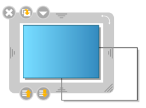

Ciascun oggetto possiede nella parte inferiore della sua area di modifica di due pulsanti. Quello di destra (freccia verso il basso) permette di far scendere l'oggetto di un livello in rapporto agli altri oggetti presenti sullo schermo.
Quello di sinistra (freccia verso l'alto) fa salire l'oggetto di un livello rispetto agli altri oggetti della schermata.
Un clic prolungato (compare una piccola freccia bianca intorno all'icona) permette di portare l'oggetto in ultima posizione (per il bottone destro) e in prima posizione (per il sinistro).
